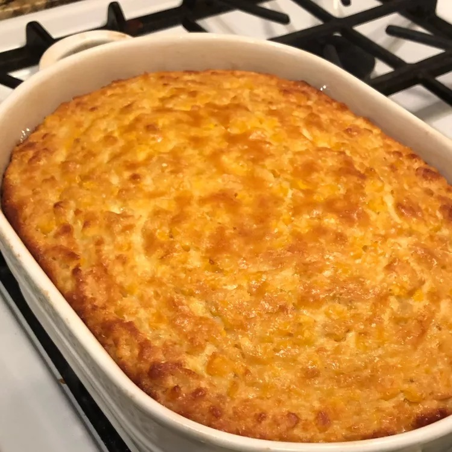

Pudding

Description
Grandma's corn pudding is comfort food at its best. This creamy corn casserole is easy to make with both whole kernel
and cream-style corn, resulting in a custardy pudding that will be a welcome addition to your holiday table.
Ingredients
- 5 eggs
- 1/3 cup butter
- 1/4 cup sugar
- 1/2 cup milk
- 1/4 cup cornstarch
- 1 can corn
- 2 cans cream corn
Steps
- Whisk the eggs, then whisk in the milk, butter, sugar, and cornstarch.
- Stir in the drained canned whole kernel corn and cream-style corn.
- Pour mixture into the prepared casserole dish and bake until golden brown.